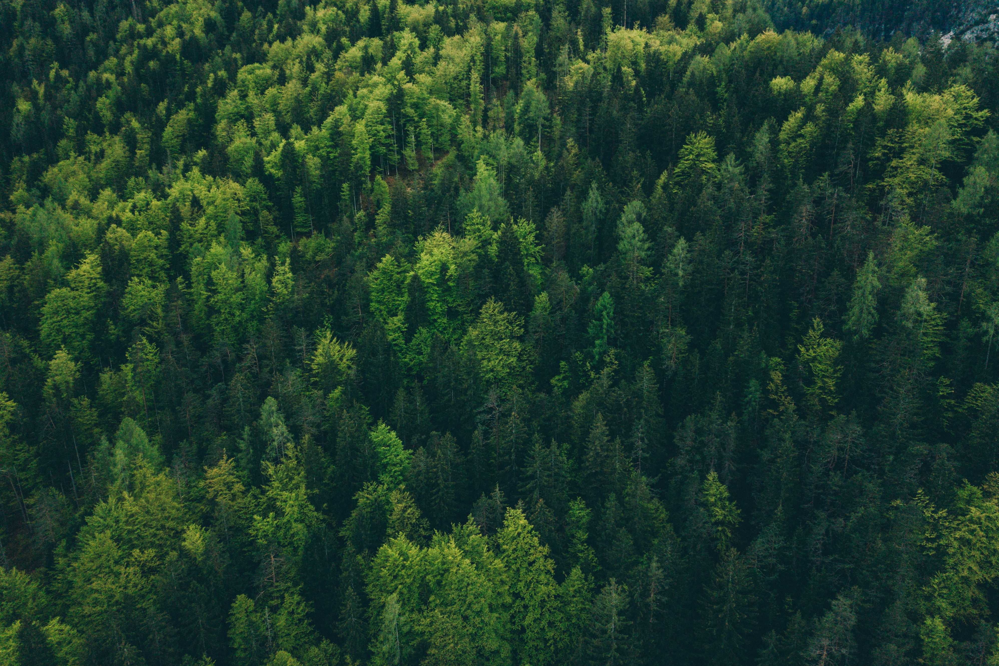
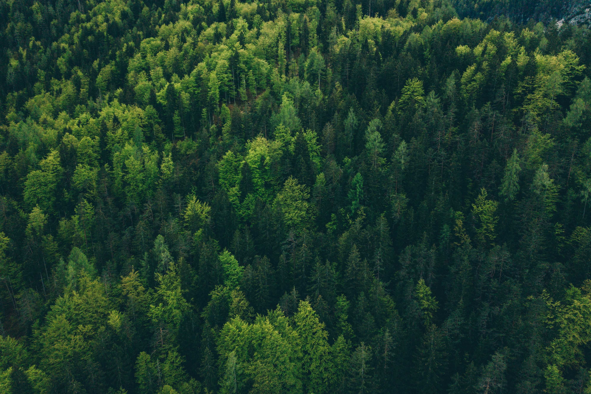

+91 97739878770
Safari booking
Get in Touch
 


The highest density of Royal Bengal Tigers, a plethora of magnificent flora and fauna - Bandhavgarh is the most-visited protected wildlife reserve in the country.
Bandhavgarh National Park is spread over the Vindhya hills in Madhya Pradesh. The national park consists of a core area of 105 sq km and a buffer area of approximately 400 sq km. The topography of the whole area varies between steep ridges, undulating forest and open meadows. Bandhavgarh National Park is known for the Royal Bengal Tigers. The density of the tiger population at Bandhavgarh is the highest known in India as well as in the world. The national park was the former hunting preserve of the Maharaja of Rewa and at present is a famous natural hub for White Tigers. White Tigers, now a major attraction around the world’s zoos, were first discovered in Rewa, not far from here. It is also believed that all the white tigers across the globe trace their roots to Bandhavgarh. The terrain is broken, with rocky hill ranges, running roughly east and west, interspersed with grassy swamps and forested valleys.
Experience the ultimate adventure in Bandhavgarh National Park
Birds
Birds
Birds
Birds
Kuno


Kuno National Park is a wildlife sanctuary located in the Sheopur district of Madhya Pradesh, India. It is renowned for its efforts in reintroducing the Asiatic lion, also known as the Indian lion, to its historic range. The park spans an area of approximately 344 square kilometers (133 square miles) and is characterized by its diverse landscape, including grasslands, dry deciduous forests, and rocky outcrops. It is situated in the Vindhyan Range, which provides a suitable habitat for a variety of wildlife species
Kuno National Park is a wildlife sanctuary located in the Sheopur district of Madhya Pradesh, India. It is renowned for its efforts in reintroducing the Asiatic lion, also known as the Indian lion, to its historic range. The park spans an area of approximately 344 square kilometers (133 square miles) and is characterized by its diverse landscape, including grasslands, dry deciduous forests, and rocky outcrops. It is situated in the Vindhyan Range, which provides a suitable habitat for a variety of wildlife species